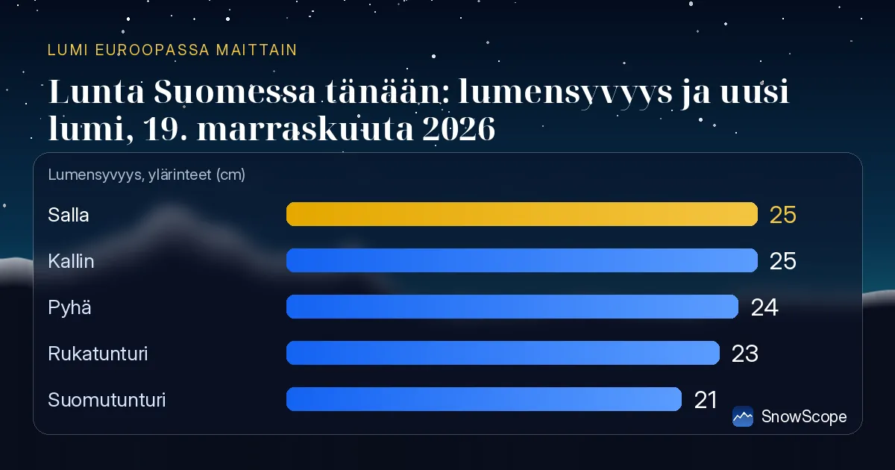
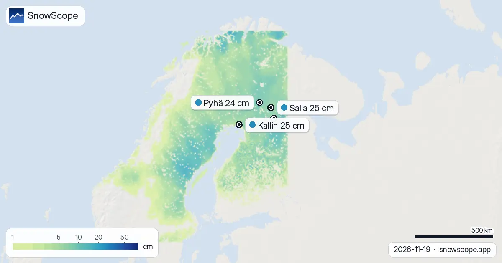

Lunta Suomessa tänään: lumensyvyys ja uusi lumi, 19. marraskuuta 2026
Salla pitää hallussaan Suomen syvintä lumipeitettä 25 cm:llä, ylittäen marraskuun keskiarvonsa 6 cm:llä. Maan lumipeite on kasvanut 63 480 km²:llä viikossa, ja paras pohja on nyt yli 500 m:n korkeudella, missä rinnat ovat lähes täysin valkoisia.
Katso kohteen Salla lumiennuste reaaliajassa SnowScope-sovelluksessaLumensyvyys, puuterihälytykset ja 3D-kartta, ilmaiseksi.
Miksi varhainen syvyys on tärkeä
Viikko sitten Salla oli vain 5 cm:n tasolla. Tämä hyppäys 25 cm:iin on ratkaiseva alemmille ja keskitason rinteille, jotka normaalisti eivät saa näin syvää lumea ennen joulukuuta. Varhainen lumisade antaa hiihtokeskuksille mahdollisuuden valmistaa rinteet maastolle, joka olisi tavallisen marraskuun olosuhteissa vielä ohuesti lumitettu tai paljastunut.
Sallan 25 cm tänään ylittää normaalia 19. marraskuuta vastaavan 19 cm:n syvyyden 32 %:lla. Neljä viidestä syvimmän lumen hiihtokeskuksesta—Salla, Kallin, Rukatunturi ja Suomutunturi—ovat edellä tavallisista marraskuun puolivälin lumimääristään, kun taas Pyhä on juuri keskiarvolla.
| Resort | Today | Normal for the date | Share of normal |
|---|---|---|---|
| Salla | 25 cm | 19 cm | 132 % |
| Kallin | 13 cm | 5 cm | 260 % |
| Pyhä | 18 cm | 18 cm | 100 % |
| Rukatunturi | 21 cm | 17 cm | 124 % |
| Suomutunturi | 17 cm | 16 cm | 106 % |

Missä lumi on paksuimmillaan
Lumipeite vaihtelee jyrkästi korkeuden mukaan. Alle 500 m:n korkeudella vain 55 % maasta on valkoista ja keskimääräinen syvyys on 5 cm, joten alemmat rinnat pysyvät läikittyvinä. 500–1 000 m:n välillä peite nousee 16 cm:iin ja 100 % valkoinen. Yli 1 000 m:n korkeudella hiihtäjät löytävät huomattavan 41 cm:n pohjan täysin lumipeitteisillä rinteillä.
Tämä korkeusjakauma selittää, miksi ylemmän vuoren rinnat ovat valmiita nyt, kun laakson maasto näyttää vielä ruohoa ja kiviä. Nollaraja sijaitsee noin 200 m:n korkeudella, joten hiihtokeskukset, joiden huiput ovat yli 400 m:n korkeudella, omaa käyttökelpoista maastoa, kun taas alemmat kohteet odottavat edelleen.

Viisi syvimmän lumen hiihtokeskusta tänään
Salla johtaa 25 cm:llä. Lähellä perässä ovat Kallin (25 cm), Pyhä (24 cm), Rukatunturi (23 cm) ja Suomutunturi (21 cm). Lumi makaa vähintään 28:lla maan 67 hiihtokeskuksesta, vaikka monilla on alle 10 cm ja ne eivät ole vielä hiihtokelpoiset.
Vain Salla ja Kallin ovat saavuttaneet 25 cm:n. Salla kasvoi 8 cm:llä viimeisen kolmen päivän aikana; Kallin keräsi 5 cm. Molemmat ovat selvästi edellä tavallista syvyyttään tälle päivälle, vaikka Kallinin kasvu on dramaattisempi—sen 25 cm on nyt 260 % tavallisesta 5 cm:stä tyypilliselle 19. marraskuulle.
Mitä seuraava viikko tuo
Lauantai 21. marraskuuta erottuu suurimman lumen päivänä, jolloin ennustetaan jopa 6 cm. Kolme päivää edessä (22. marraskuuhun asti) voivat lisätä jopa 12 cm lumisimmille rinteille. Seitsemän päivän sisällä jopa 13 cm on mahdollista, joten pohja kasvaa edelleen.
Sitä vastoin päivät 8–14 (marraskuun lopusta joulukuun alkuun) näyttävät hiidemän kauteen vain noin 6 cm:llä lumisimmalla maastolla. Tämä antaa hiihtäjille ikkunan: olosuhteet paranevat nopeimmin seuraavien päivien aikana ja vakiintuvat sitten.
Kuinka pitkälle peite on levinnyt
Suomen lumipeitteinen alue kattaa nyt 166 530 km²:ä eli 55 % kartoitetuista korkeista alueista. Tämä edustaa 63 480 km²:n kasvua vain seitsemässä päivässä—dramaattista talven vakiintumista. Verrattuna eiliseen, valkoinen alue kasvoi 1 720 km²:lla.
Trendi osoittaa vaihtelevuutta: lumipeite hypähti 157 360 km²:stä 16. marraskuuta 183 210 km²:iin 17. marraskuuta, putoaa sitten takaisin 165 910 km²:iin 18. marraskuuta ennen vakiintumista 166 530 km²:iin 19. marraskuuta. Tämä viikko viikolta vaihteleva heilahdus on normaalia marraskuussa, kun kylmät ja lämmin kamat vuorottelevat.
Valitse paras päivä lumelle
Kunnostetut rinnat yli 500 m:n korkeudella ovat paras vaihtoehto juuri nyt: niillä on vakaa 16 cm:n pohja ja 100 % lumipeite. Alemmat rinnat ovat riskinä osua kiviin tai paljaaseen. Varhainen lumi on ohutta niin, että kivet voivat makaa sen alla—pysy valmiiksi kunnostetuilla rinteillä kunnes enemmän lumisateesta peittää maastolle.
Jos aika on joustavaa, odota lauantain 21. marraskuuta jälkeen. Lauantaina putoava uusi lumi laskeutuu ja tiivistyy seuraavien päivien tai kahden aikana, kun tietyöläiset puhdistivat kapeikot korkeammille hiihtokeskuksille. Tiet vuoren kohteisiin voivat vaatia talvirenkaat tai ketjut, joten tarkista ennusteet ja tiesäät ennen lähtöä.
Vinkkejä laskijoille
- Hiihtele yli 500 m:n korkeudella, missä peite on jatkuva ja syvä. Alle kyseisen korkeuden, 45 % maasta on vielä paljastunut tai ohut.
- Vain kunnostetut rinnat: varhainen lumi on ohuetta ja kivet makaa sen alla kunnostamattomilla rinteillä.
- Talvirenkaat tai ketjut saattavat olla tarpeen korkeampiin hiihtokeskuksiin pääsemiseksi; tarkista tiesäät ennen matkaa.
- Palaa lauantain 21. marraskuuta jälkeen jos pystyt. Tuore lumi ehtii laskeutua ja tulla vakaampi seuraavien päivien aikana.
- Tarkista jokaisen hiihtokeskuksen omat hissin tilat ja avauspäivät ennen varaamista.
Näistä luvuista
Hiihtokeskusten lumensyvyydet ovat syvin lumi keskuksen ylärinteillä näytettynä päivänä; ne ovat arvioita alueelle, eivät mittaus yhdessä pisteessä. Ennusteet voivat muuttua. Lue aina virallinen lumivyöryennuste ennen rinteiden ulkopuolelle lähtöä.
Viittaa tähän raporttiin
Tutkimukseen, opetukseen tai mediaan: luvut ja kaaviot ovat vapaasti käytettävissä CC BY 4.0 -lisenssillä tällä lähdeviitteellä.
SnowScope (2026), Lunta Suomessa tänään: lumensyvyys ja uusi lumi, 19. marraskuuta 2026, https://snowscope.app/blog/fi/2026/11/finland-snow-ahead-of-normal-19-november-2026.html, luettu 2026-11-19
SnowScope (Atlas Labs). (2026, November 19). Lunta Suomessa tänään: lumensyvyys ja uusi lumi, 19. marraskuuta 2026. SnowScope snow reports. https://snowscope.app/blog/fi/2026/11/finland-snow-ahead-of-normal-19-november-2026.html
BibTeX
@misc{snowscope2026finlandsnowaheadofnormal,
author = {{SnowScope (Atlas Labs)}},
title = {Lunta Suomessa tänään: lumensyvyys ja uusi lumi, 19. marraskuuta 2026},
year = {2026},
month = nov,
howpublished = {\url{https://snowscope.app/blog/fi/2026/11/finland-snow-ahead-of-normal-19-november-2026.html}},
note = {Published 2026-11-19 12:58 UTC; accessed 2026-11-19}
}· CC BY 4.0 · Menetelmät, data ja työkalut →
Salla: lumi ja lämpötila korkeuden mukaan, tämä talvi ja viime talvi (työkalut) →
Seuraa: Salla
Ilmainen: viesti, kun uutta lunta on tulossa, ja ennuste joka aamu.